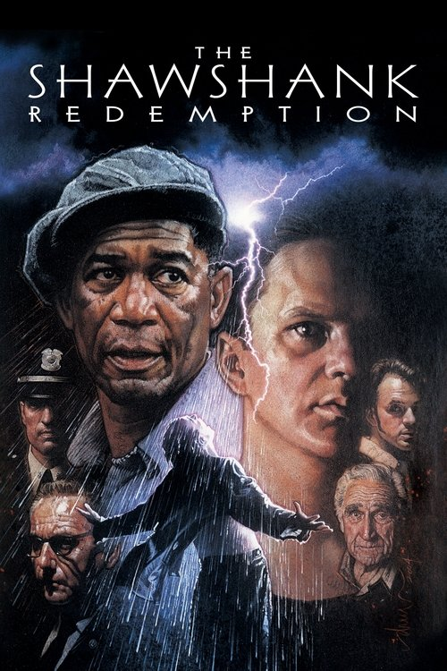
1Shahshankdan qochish
Nohaq qamalgan bankir Endi Dufresn qamoqxonada umid va do'stlik tufayli 20 yil davomida o'z najotini izlaydi. Tarixdagi eng yaxshi film deb tan olingan durdona.
Kino olamiga xush kelibsiz
eng zo'r kinolar

1Nohaq qamalgan bankir Endi Dufresn qamoqxonada umid va do'stlik tufayli 20 yil davomida o'z najotini izlaydi. Tarixdagi eng yaxshi film deb tan olingan durdona.
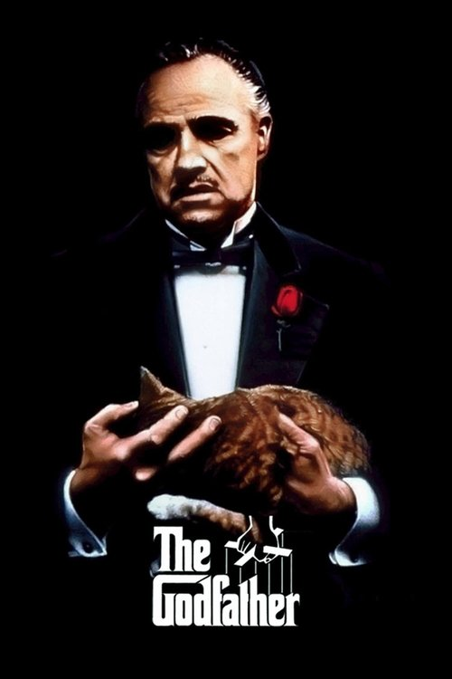
2Korleone oilasining kuchli boshlig'i Don Vito o'g'li Mayklni oila taxtiga tayyorlaydi. Hokimiyat, xiyonat va oila haqidagi abadiy klassika.
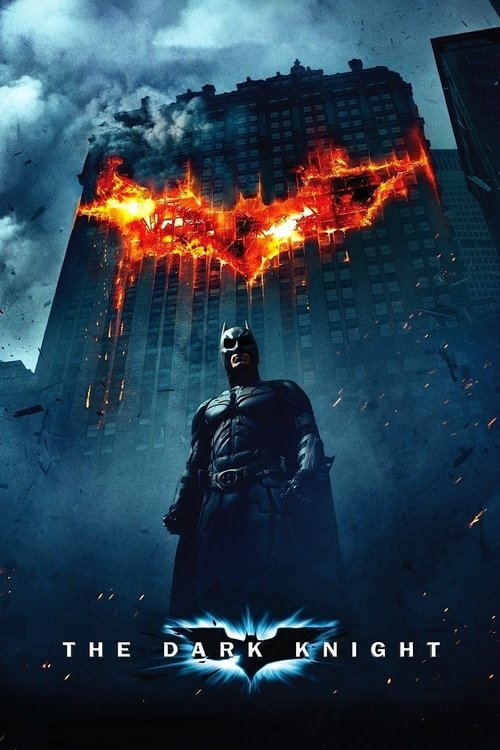
3Betmen anarxiya va xaos olib keluvchi Joker bilan to'qnashadi. Gotham shahrining taqdiri endigina hal bo'la boshlaydi.
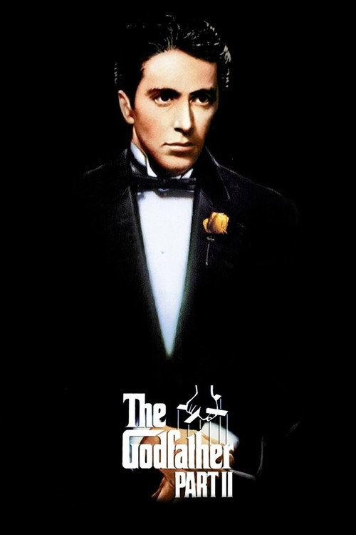
4Maykl Korleone oilasini boshqarar ekan, yosh Vito tarixini kuzatamiz. Hokimiyat insonni butunlay o'zgartirishi mumkin.
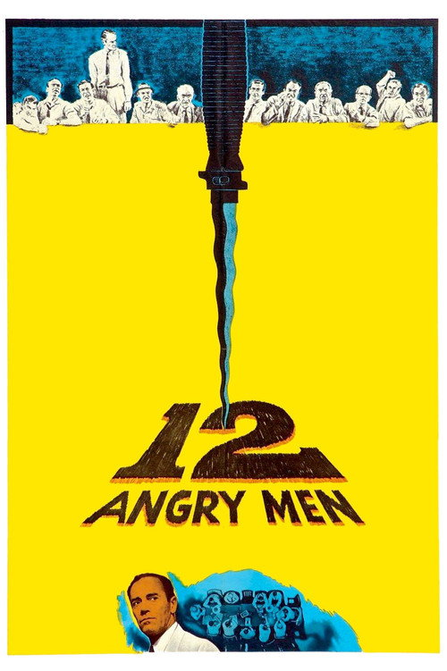
5Bitta hakamlar hay'ati xonasida 12 kishi o'limga hukm qilingan yigitchining taqdirini hal qiladi. Shubha va adolat haqidagi ajoyib psixologik drama.
 6
6
Nemis ishbilarmoni Oskar Shindler Ikkinchi jahon urushi paytida 1000 dan ortiq yahudiyni qutqaradi. Insoniyat tarixidagi eng ta'sirchan filmlardan biri.
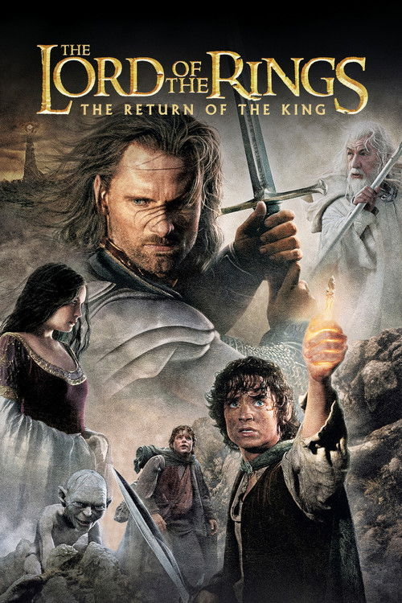
7Frodo va Sem Uzukni Mordor yo'nalishida yo'q qilishda davom etishadi, qolgan armiya esa Gondor himoyasida jangga tayyorlanadi. Ajoyib epik yakun.
 8
8
Jinoyatchilar, boksyor va chekilgan qahramonlar taqdirlari Los-Anjelesda chirmashadi. Tarantino uslubidagi noyob va satirik gangster eposi.
 9
9
Hobbit Frodo yovuz Uzukni yo'q qilish missiyasida birodarlik jamoasiga qo'shiladi. O'rta Yerning o'rmonlari, tog'lari va janglari bilan sehrli sayohat.
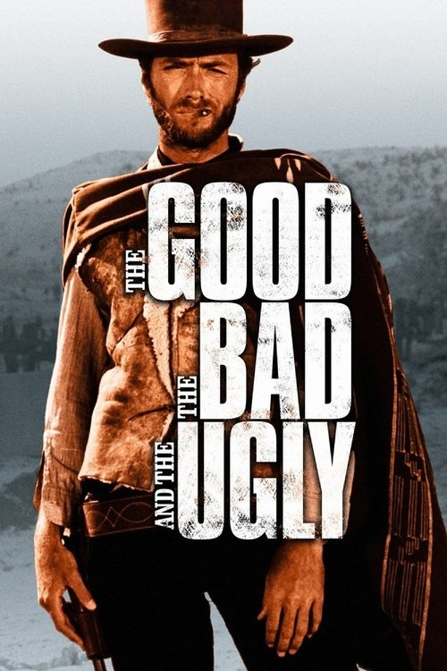
10Uch otliq o'g'ri dafn etilgan oltin xazinasini izlaydi. Sharqiy vestern janrining cho'qqisi, Ennio Morrikone musiqasi bilan.
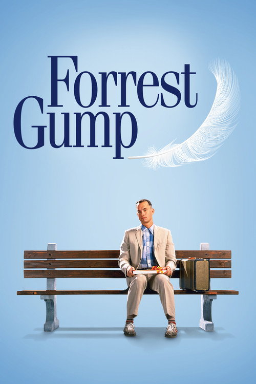
11Oddiy aqliyetkam yigitcha Forrest hayotida misli ko'rilmagan muvaffaqiyatlarga erishadi. Hayot limondan limonad qilish haqidagi iliq va kulgili hikoya.
 12
12
Uyqusizlikdan aziyat chekkan xodim o'ziga o'xshagan sirli erkak bilan maxfiy jang klubiga asos soladi. Iste'mol jamiyati va o'zlikni topish haqida.
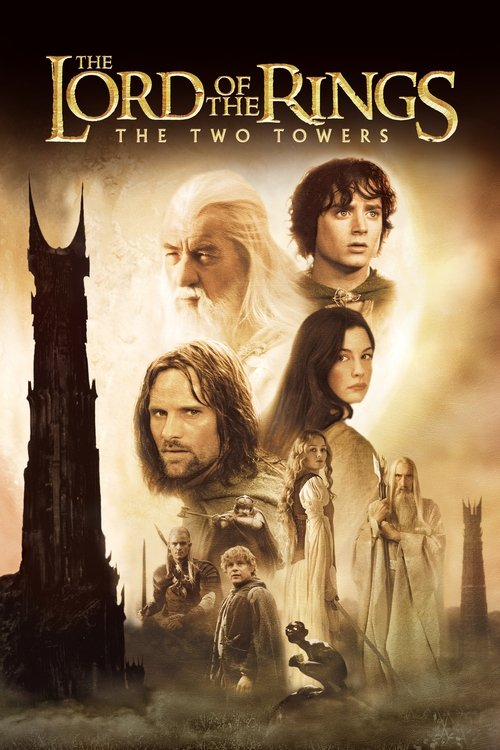
13Birodarlik parchalanadi, Frodo esa Sem bilan Mordor sari yo'lini davom ettiradi. Xelm qal'asidagi buyuk jang esa kino tarixiga kiradi.
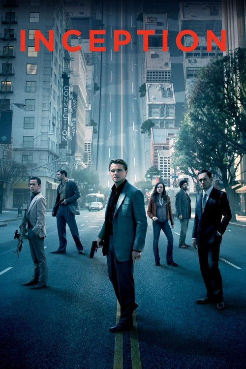
14Kobb tushlar ichiga kirib g'oyalarni o'g'irlaydigan mutaxassis. Eng murakkab vazifa - g'oya ekish. Tushlar qatlamlari va vaqt haqidagi genial triller.
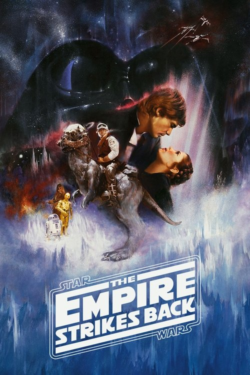
15Imperiya qasos olishga tayyor, Lyuk esa jedi bo'lish yo'lida Darth Vader bilan yuzma-yuz keladi. Seriyaning eng sevimli epizodi.
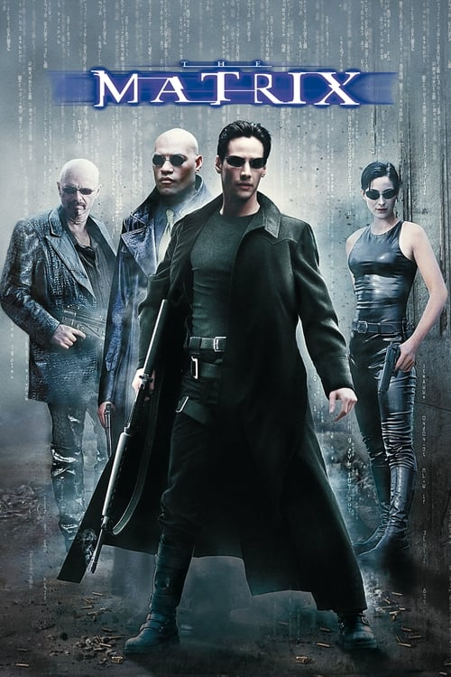
16Xaker Neo haqiqat dasturlashgan virtual olam ekanini bilib oladi. Maxsus effektlar va falsafiy g'oyalar bilan kino olamida inqilob qilgan film.
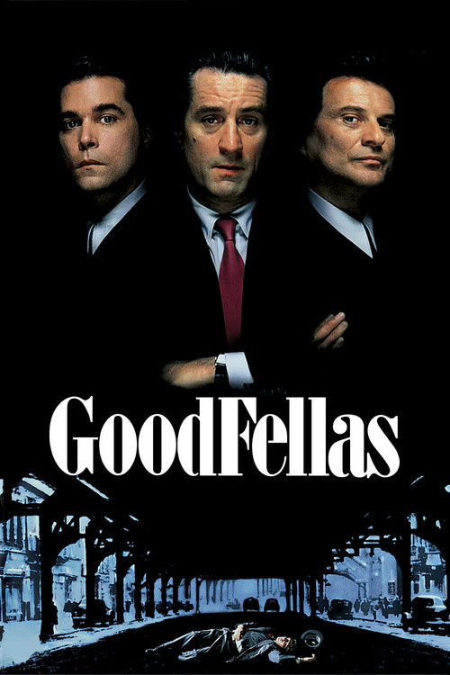
17Nyu-Yorkdagi mafiya hayotiga kirib boradigan Genri Xillning 30 yillik hikoyasi. Haqiqiy voqeaga asoslangan eng zo'r gangster filmlaridan.
 18
18
Qamoqdan qochish uchun ruhiy kasallar shifoxonasiga tushgan Makmerfi qattiq tartibga qarshi chiqadi. Erkinlik va inson ruhi haqidagi klassika.
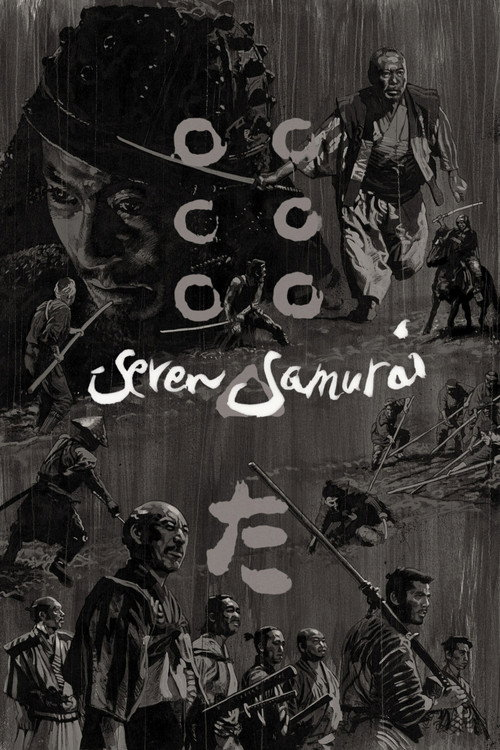
19Qishloq aholisi talonchilardan himoya qilish uchun yetti samuray yollaydi. Akira Kurosava shoh asari, jahon kinosiga ulkan ta'sir ko'rsatgan.
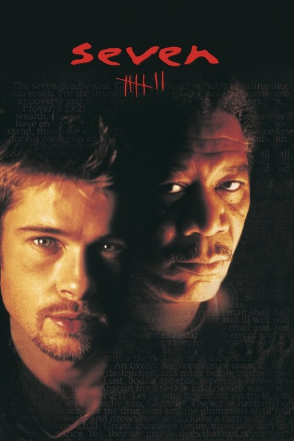
20Detektivlar yetti halokatli gunoh asosida qotillik qiluvchi psixopatni qidiradi. Qorong'u, qo'rqinchli va ajoyib yakunli triller.
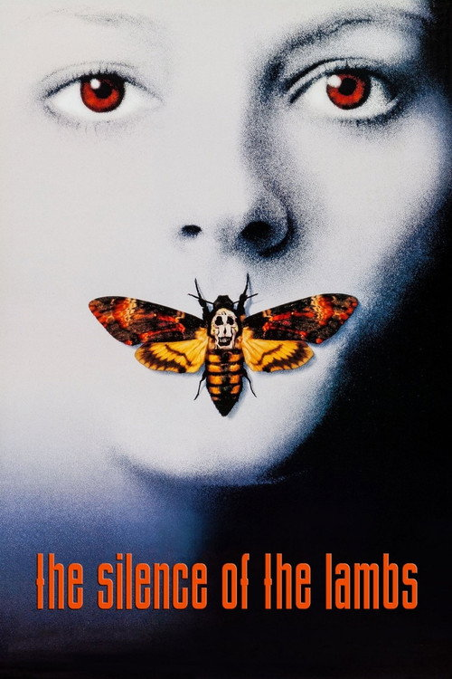
21Yosh FBlik Klariss Starlig qotilni topish uchun aqlli psixiatrik qotil Xannibal Lekterdan yordam so'raydi. Beshta Oskar yutgan psixologik triller.
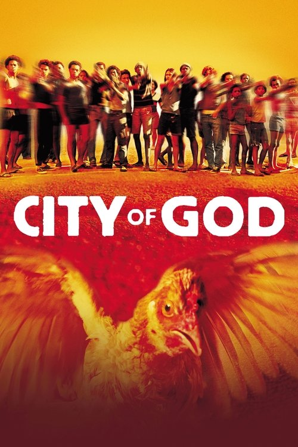
22Rio-de-Janeyroning eng xavfli hududida o'sib ulg'aygan ikki yigitning turli yo'llari. Haqiqiy hodisalarga asoslangan portlovchi drama.
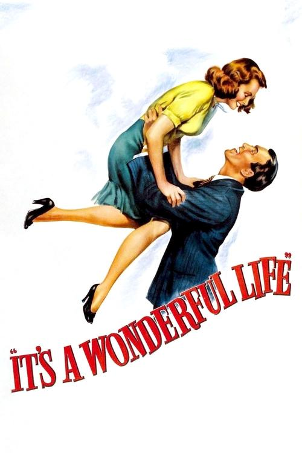
23Jorj Beyli hayotidan umidsizlikka tushganda, farishta unga o'z hayotisiz dunyo qanday bo'lishini ko'rsatadi. Rojdestvo klassikasi.
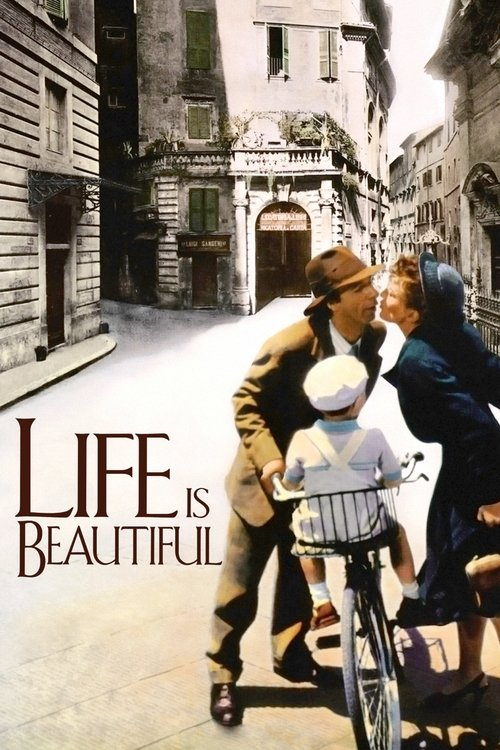
24Italiyalik yahudiy otasi lagerda o'g'lini bu faqat o'yin ekaniga ishontirishga harakat qiladi. Qayg'u va quvonch uyg'unlashgan yurakni ezadigan film.
Normandiyadagi jangdan so'ng bir guruh askarlar oxirgi tirik qolgan aka-uka Rayanni topishga yuboriladi. Urush kinosida inqilob qilgan film.
 26
26
Chihiro sehrli olamga tushib qoladi va ota-onasini qutqarish uchun ruhlar hammomida ishlashi kerak. Miyazakining eng mashhur animatsiyasi.
 27
27
Yer aholisi halok bo'lish arafasida, ekipaj insoniyat uchun yangi uy izlash maqsadida koinotga uchadi. Vaqt, sevgi va omon qolish haqidagi epik.
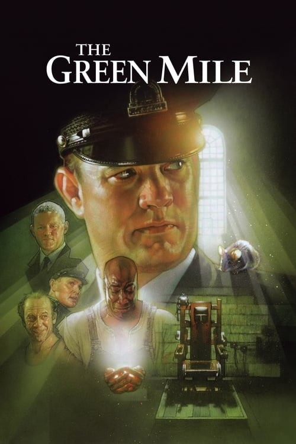
28O'lim jazosiga hukm qilingan g'ayrioddiy mahbus Kofe mo''jiza kuchiga ega. Qamoqxona xodimi bilan birgalikda mo''jizalar haqidagi hissiy film.
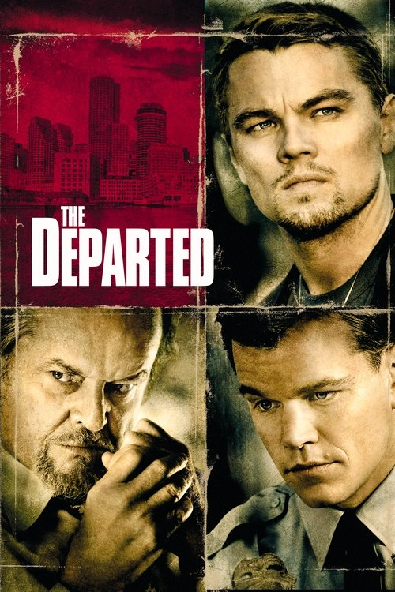
29Mafiya va politsiya bir-biriga o'z agentlarini kiritadi. Ikkala tomonda ham ayg'oqchi - kim birinchi topadi? Shiddatli triller.
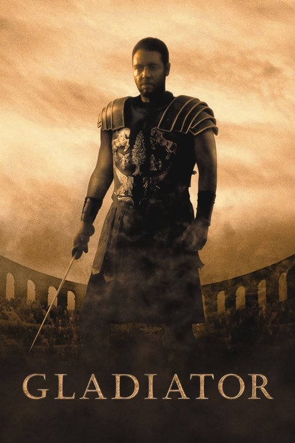
30General Maksimus xiyonat natijasida qul bo'lib, gladiatorga aylanadi va Rimda qasos izlaydi. Antik epik filmlarning durdonasi.
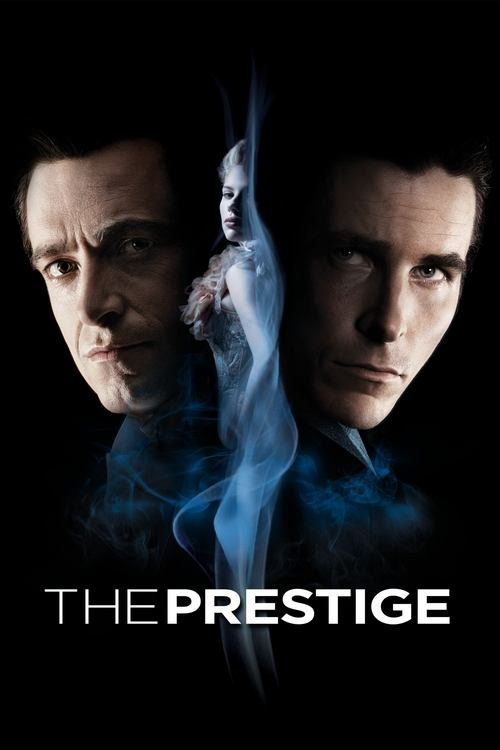
31Ikki raqib illyuzionist eng buyuk hiyla uchun hammasini xavf ostiga qo'yadi. Syujeti oxirigacha sir tutadigan ajoyib drama.
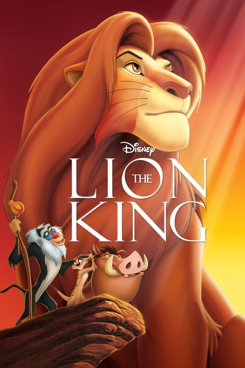
32Sher shahzodasi Simba otasining o'limi uchun o'zini ayblab, uyidan qochadi. O'ziga qaytish va taxt uchun kurash haqidagi Disney klassikasi.
Polshalik yahudiy pianinochi Varshava gettosidan omon qolish uchun kurashadi. Urushda omon qolish va musiqaning kuchi haqidagi film.
 34
34
Yosh barabanchi mashhur o'qituvchisi tomonidan mukammallikka undaladi. Iste'dod va tirishqoqlik chegaralari haqidagi shiddatli drama.
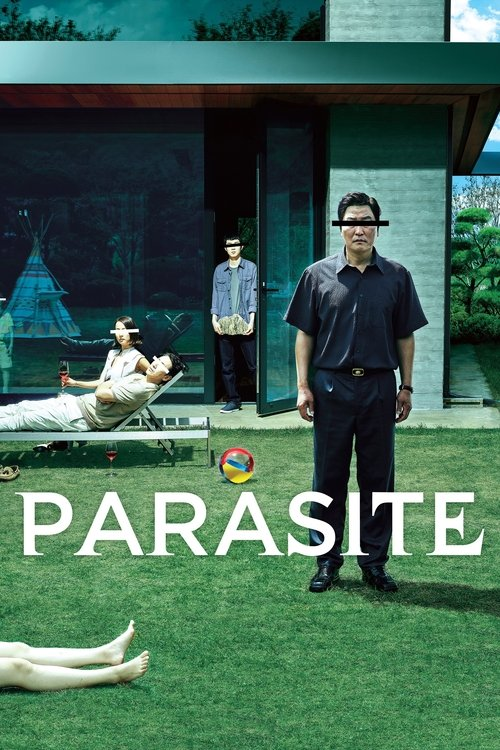
35Kambag'al oila boy oilaga asta-sekin kirib boradi. Ijtimoiy tabaqalar haqidagi qorong'u komediya. Oskar sovrindori birinchi xalqaro film.
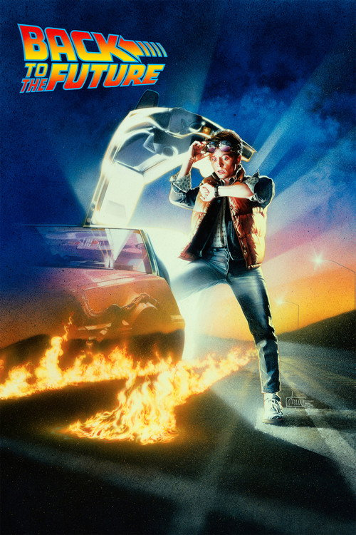
36O'smir Marti Makflay vaqt mashinasi orqali 1955-yilga tushib qoladi. Ota-onasi bilan uchrashib, kelajakni saqlab qolishi kerak. Abadiy klassika.
Falaj bo'lib qolgan millionerga g'amxo'rlik qilish uchun ishga olinadigan yosh yigitcha. Haqiqiy do'stlik haqidagi iliq hikoya.
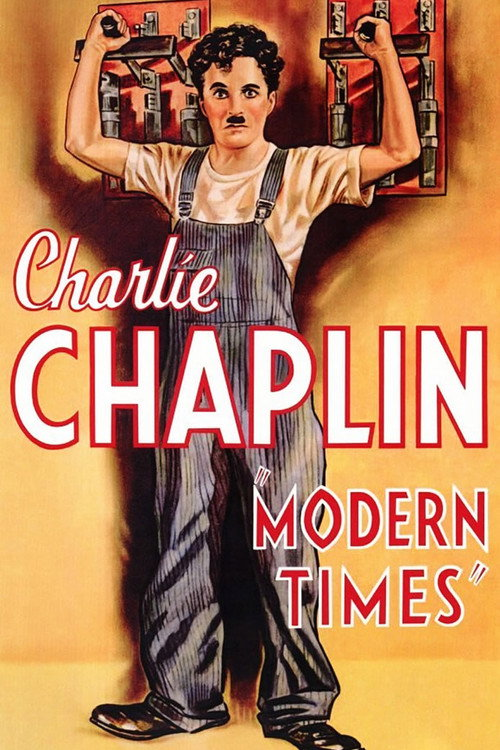
38Chaplin zamonaviy sanoat dunyosida omon qolishga urinadi. Ovozsiz kino davrining eng buyuk komediyalaridan biri.
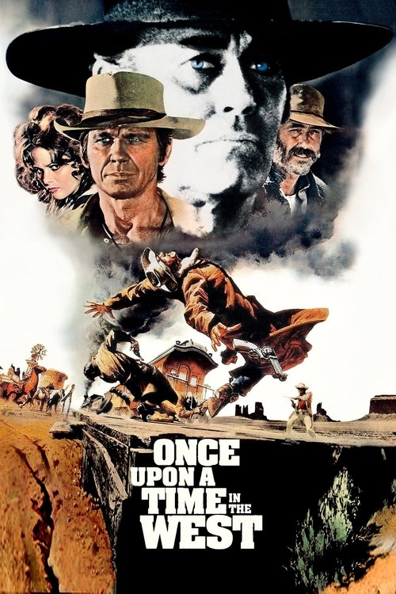
39Temir yo'l magnati o'z rejasini amalga oshirish uchun hamma narsaga tayyor. Uch nafar begona odam unga qarshi birlashadi. Epik vestern.
Sitsiliyalik yigit kino proyektsionist bilan do'stlashib, kinoga oshiq bo'ladi. Bolalik, sevgi va kino haqidagi ta'sirchan hikoya.
 41
41
Besh jinoyatchi gumonlanuvchi sifatida tergovga tushadi. Afsonaviy Keyser Söze kim? Kino tarixidagi eng kutilmagan yakunlardan biri.
 42
42
Yakka qotil Leon qo'shnisi oilasi o'ldirilganidan so'ng kichkina Matildaga panoh beradi. Qattiq qalb va mehribon qalb haqidagi film.
So'nggi neksist Derek qamoqdan chiqib, akasini shu yo'ldan qaytarishga harakat qiladi. Nafrat va yaxshilanish haqidagi og'ir drama.
 44
44
Yozuvchi oilasi bilan bo'sh mehmonxonada qorovul bo'lib qoladi. Yolg'izlik uning ongini buzadi. Qo'rqinchli kinoning cho'qqisi.
 45
45
Yahudiy harbiy guruh natsistlarga qarshi shafqatsiz urush olib boradi. Urush haqidagi eng zo'r Tarantino filmi.
 46
46
Betmen nafaqaga chiqqan edi, ammo Bane Gothamni yo'q qilmoqchi. Qorong'u ritsar triologiyasining buyuk finali.
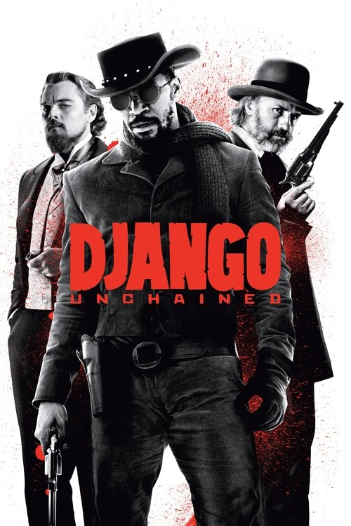
47Ozod qilingan qul Django o'z xotinini qutqarish uchun nemis ovchisi bilan yo'l oladi. Qasos va ozodlik haqidagi vestern.
 48
48
Komik Artur Flek jamiyat tomonidan rad etilib, Jokerga aylanadi. Jamiyat qahramonni yaratadi yoki buzadi? Qorong'u psixologik drama.
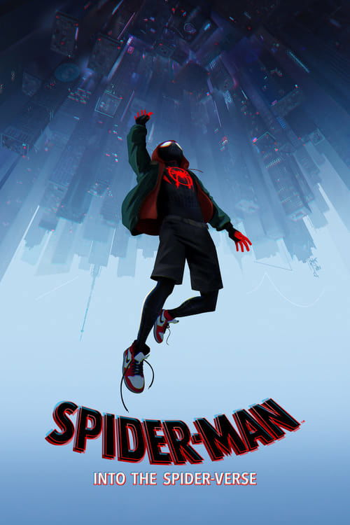
49Miles Morales o'z olamiga kirib kelgan boshqa o'rgimchak odamlar bilan kuchlarini birlashtiradi. Animatsiyada inqilob qilgan film.
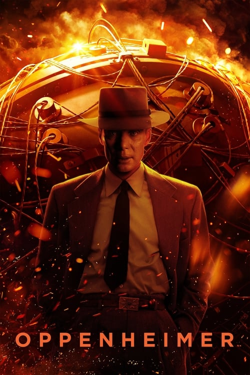
50Atom bombasining otasi J. Robert Oppengeymer hayoti va axloqiy azoblari. Nolanning zamonaviy kino san'atidagi eng katta yutuqlaridan biri.
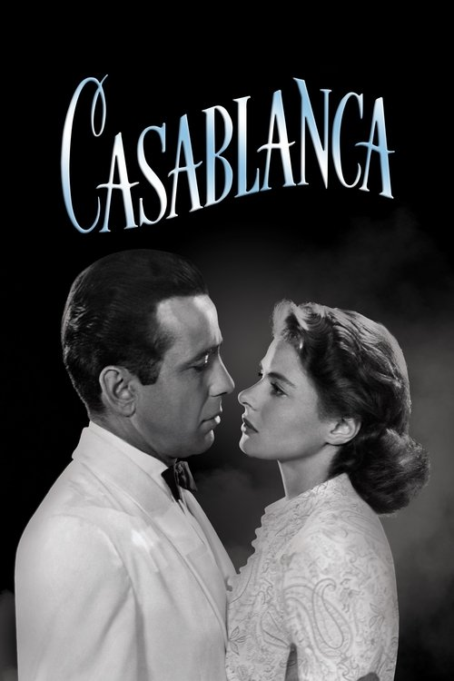
51Ikkinchi jahon urushi paytida Kasablankadagi tun-klub egasi o'zining sobiq sevgisi bilan qayta uchrashadi. Sevgi va tanlov haqidagi abadiy klassika.
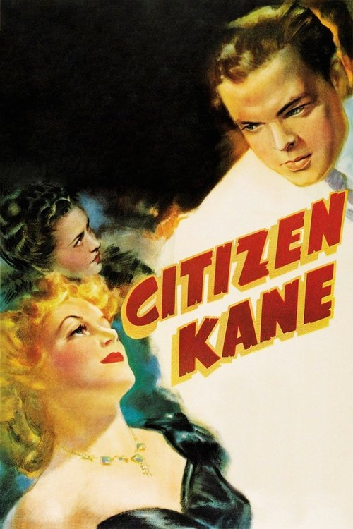
52Millioner Charlz Foster Keynning o'limidan so'ng jurnalistlar uning hayotini o'rganishni boshlaydi. Kino tarixidagi eng ta'sirli asarlardan biri.
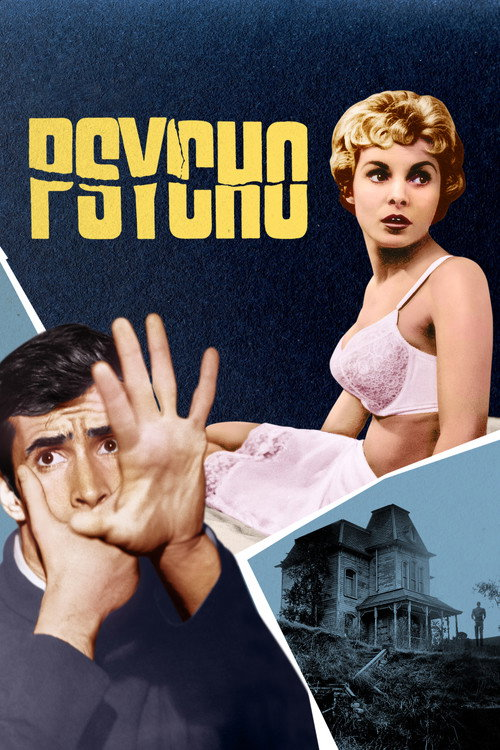
53O'g'irlikdan so'ng yo'ldan adashgan qiz kichik mehmonxonaga kelib qoladi. Xitchkokning kino tarixini o'zgartirgan qo'rqinchli shoh asari.
 54
54
Balandlikdan qo'rqadigan sobiq detektiv kuzatuv topshirig'i paytida o'zini sirli ayolga qaram qilib qo'yadi. Psixologik trillerning cho'qqisi.
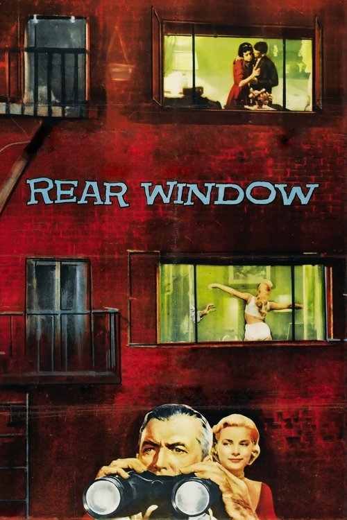
55Oyog'i singan fotograf qo'shnilarning hayotini durbin orqali kuzatadi va qotillik bo'lganiga shubha qiladi. Suspens olamning eng zo'r namunalaridan.
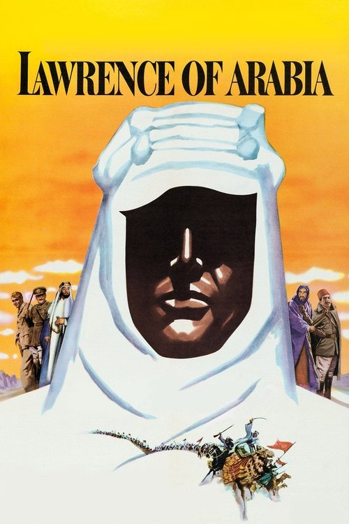
56Britaniyalik ofitser Tomas Lourens arab qabilalarini birlashtirib, ulkan epik yurishni boshqaradi. Kino tarixidagi eng ulkan epopeyalardan biri.
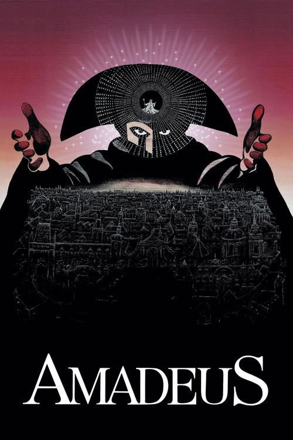
57Kompazitor Salyerining hasad ichida Volfgang Amadey Motsart hayotini hikoya qilishi. Iste'dod va hasad haqidagi ajoyib biografik drama.
 58
58
Vetnam urushi paytida kapitan Uillard daryo orqali o'z qo'mondonini topish uchun safar qiladi. Urushning zulmati haqidagi epik drama.
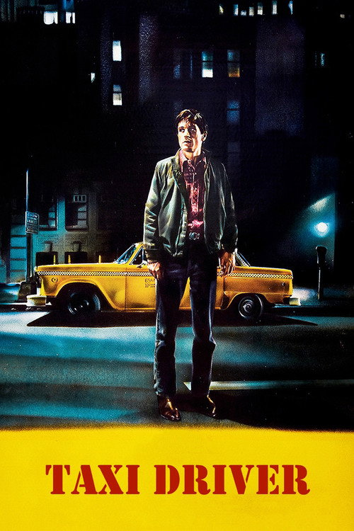
59Uyqusizlikdan qiynalgan sobiq dengiz piyodasi Travis Bikl N'y-York tunda taksi haydaydi. Jamiyatning qorong'u tomoni haqidagi klassik.
Bokschi Jeyk La Motta hayotidagi g'alaba va mag'lubiyatlar, o'z nafsi bilan kurashi. Robert De Niro rol ijro etgan eng kuchli dramalardan.
 61
61
Zo'ravonlik qiladigan Aleks davlat tomonidan qayta tarbiyalanadi. Erkin iroda va jamiyat haqidagi munozarali Kubrick shoh asari.
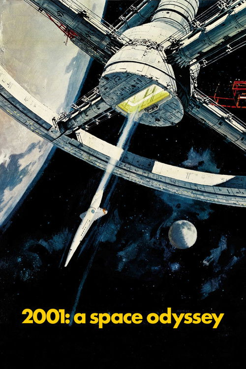
62Sirli monolit kashf etilgach, kosmonavtlar ekipaji insoniyat evolyutsiyasini o'zgartiradigan sayohatga chiqadi. Kino san'atining cho'qqisi.
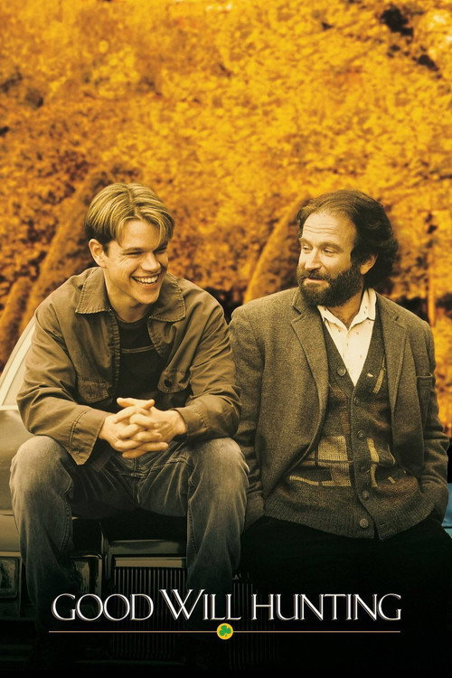
63Universitetda tozalovchi bo'lib ishlaydigan daho yigit matematika professorining e'tiborini tortadi. Iste'dod va o'zligini topish haqidagi hissiy drama.
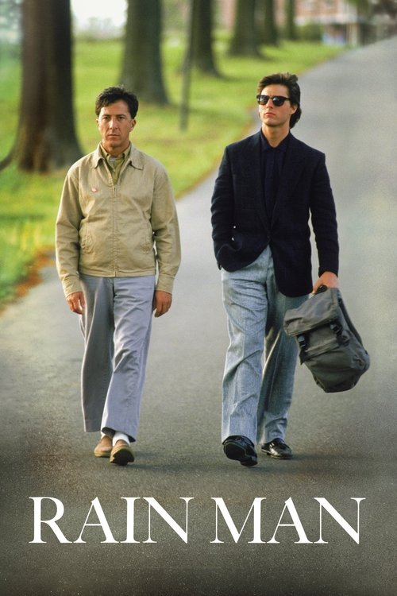
64Xudbin biznesmen otasining vasiyatnomasi tufayli autist akasi bilan sayohatga chiqishga majbur bo'ladi. Aka-uka sevgisi haqidagi ta'sirchan film.
 65
65
Genial matematik Jon Nesh shizofreniya bilan kurashgan holda Nobel mukofotiga da'vogar bo'ladi. Aql va sabr haqidagi ilhomlantiruvchi film.
Duduqlanishdan aziyat chekkan Britaniya qiroli Jorj VI nutq terapevti yordamida urush paytida xalqqa murojaat qilishga tayyorlanadi.
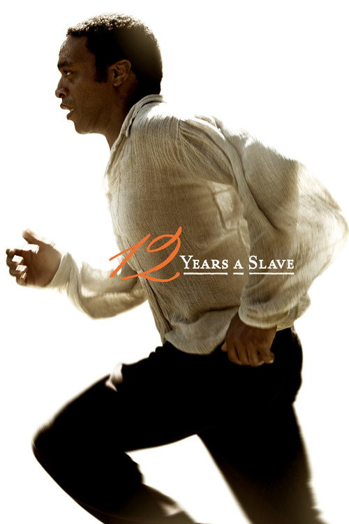
67Erkin tug'ilgan musiqachi o'g'irlanib, qul sifatida 12 yil yashashga majbur bo'ladi. Haqiqiy voqeaga asoslangan dahshatli va ta'sirchan drama.
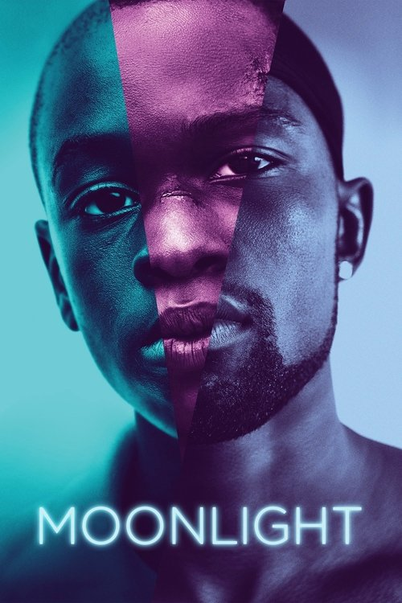
68Mayami chekkasida o'sib ulg'aygan yigit hayotining uch davri: bolalik, o'smirlik va voyaga yetish. O'zlikni izlash haqidagi nozik drama.
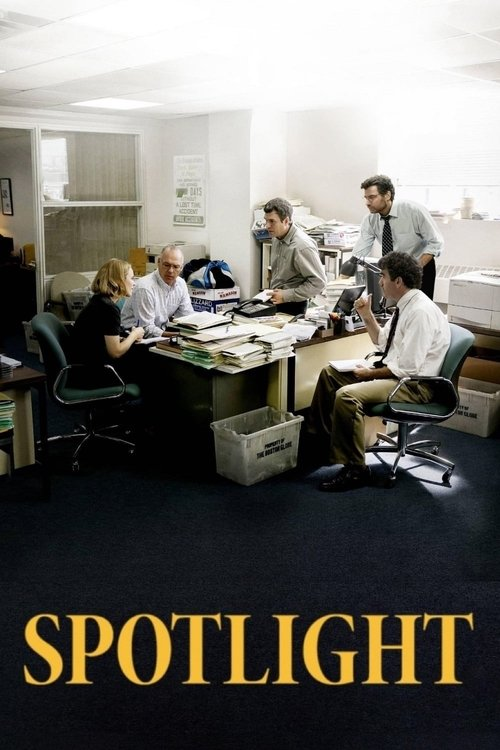
69Boston Globe jurnalistlari cherkovdagi keng ko'lamli jinoiy yashirishni fosh qiladi. Haqiqiy tergovga asoslangan jurnalistik drama.
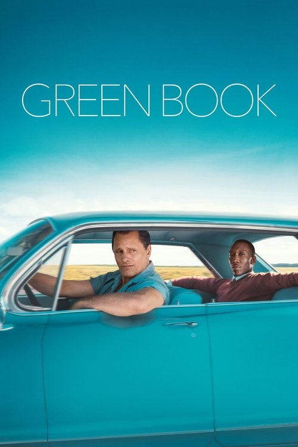
70Italiyalik amerikalik qo'riqchi mashhur qora tanli pianinochini AQSh janubidagi konsertlariga kuzatib boradi. Do'stlik haqidagi iliq hikoya.
Keksa murabbiy o'zining hayotining so'nggi imkoniyati sifatida qiz bokschini tayyorlaydi. Orzu va sabr haqidagi yurakni ezadigan drama.
Genial matematik Alan Tyuring Enigma kodini yechish uchun hisoblash mashinasini yaratadi. Urush va shaxsiy taqdir haqidagi biografik drama.
Yosh dasturchi Mark Sukerberg Facebook'ni yaratib, koinotning eng boy insonlaridan biriga aylanadi. Do'stlik va xiyonat haqidagi film.
 74
74
Fuqarolar urushi davrida janubdagi zavqli Skarlett O'Xara o'z hayotini saqlab qolish uchun kurashadi. Kino tarixidagi eng mashhur romantika.
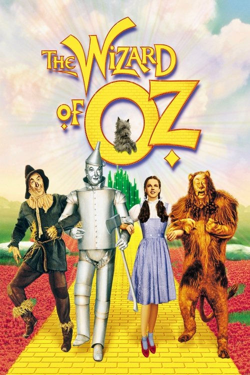
75Dori yetib borgan qiz Dottina sehrli Oz o'lkasida sehrgar bilan uchrashish uchun yo'l oladi. Rangli kinoning abadiy klassikasi.
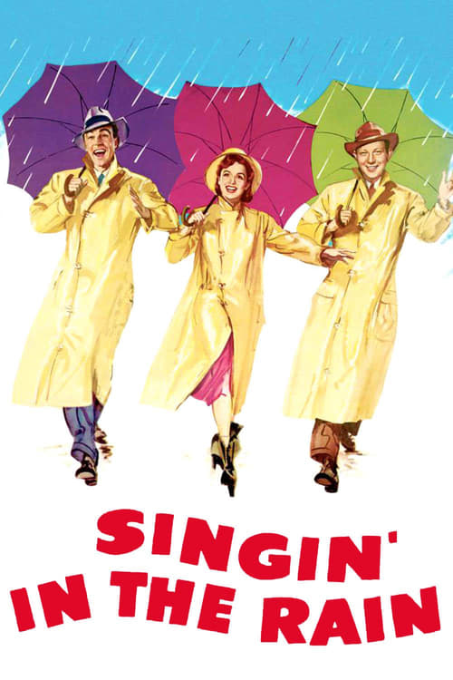
76Ovozsiz kinodan ovozli kinoga o'tish davridagi aktyorlar hayoti. Musiqa va raqs bilan to'la eng mashhur musiqiy filmlardan biri.
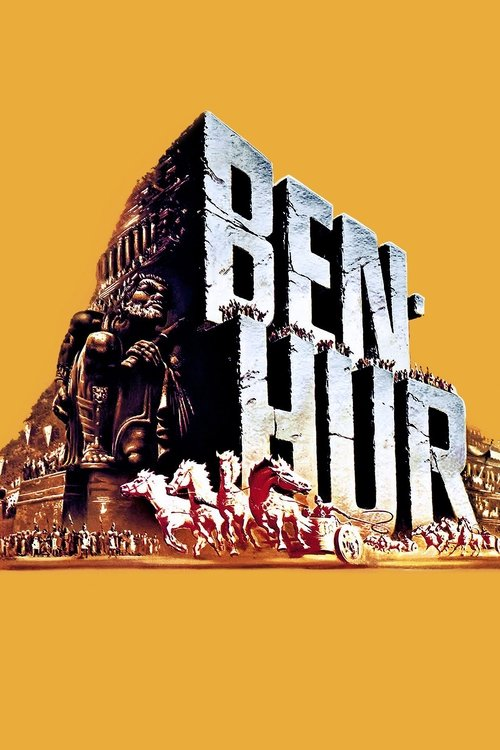
77Aka-uka tomonidan xiyonat qilingan yahudiy zodagon rimlik qulga aylanadi va qasos uchun jangga tayyorlanadi. Epik kinoning durdonasi.
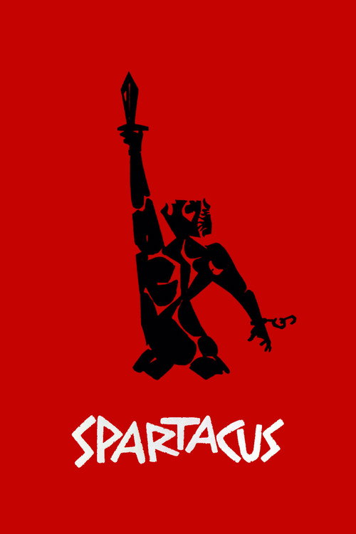
78Rim imperiyasida qul bo'lgan Spartak o'z kuchini to'plab, erkinlik uchun ulkan qo'zg'olon ko'taradi. Epik tarixiy klassika.
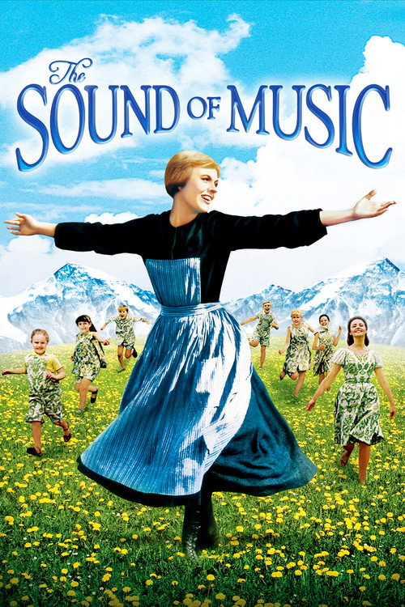
79Monastirdan kelgan qiz general oilasining bolalariga musiqa o'rgatadi. Sevgi va musiqa bilan to'la oilaviy klassika.
Yapon asirligidagi Britaniya polkovnigi daryo ustiga ko'prik qurishni buyuradi, ammo o'z ittifoqchilariga qarshi ishlayotganini tushunmaydi.
Kelajak shahrida boylar yuqorida, ishchilar esa yer ostida yashaydi. Robot ayol esa ularni birlashtirishga urinadi. Ovozsiz kinoning ulug'vor shoh asari.
Kambag'al chol-Chaplin ko'r gul sotuvchi qizning ko'zini davolash uchun pul topishga harakat qiladi. Ovozsiz komediyaning eng buyuk asari.
 83
83
Oltin izlovchi Cho'loq Alaskaning qiyin sharoitlarida omon qolishga urinadi. Chaplin komediyasining abadiy klassikasi.
Telba general yadroviy hujumga buyruq beradi va dunyo falokat yoqasiga keladi. Yadro urushi haqidagi eng zo'r satirik komediya.
Nyu-York gettosida o'sgan ikki do'stning yarim asrlik mafiya hayoti. Do'stlik, xiyonat va qasos haqidagi epik drama.
Kubalik muhojir Toni Montana Mayamida giyohvandlik imperiyasini qurib, hokimiyatga ochko'zlik bilan erishadi. Al Pachino ijrosi.
Las-Vegasdagi kazino imperiyasi, hokimiyat va hasad tufayli buziladigan hayotlar. Skorseze va De Nironing ajoyib hamkorligi.
 88
88
Professional o'g'ri va uni ta'qib qilayotgan detektiv o'rtasidagi keskin to'qnashuv. Eng zo'r jangari trillerlardan biri.
Oltin o'g'irlash rejasi barbod bo'lgach, olti jinoyatchi bir-biridan shubhalanib qoladi. Tarantino debyuti kino olamini larzaga soldi.
Ovchi topib olgan pul sumkasi uning hayotini xavf ostiga qo'yadi, uni esa shafqatsiz qotil ta'qib qiladi. Oskarga sazovor triller.
Kambag'al konchidan neft magnatiga aylangan Daniel Pleynvining hokimiyat va ochko'zlik yo'li. Daniel Day-Lyuisning ajoyib ijrosi.
Xotini o'g'irlab pul talab qilmoqchi bo'lgan nochor sotuvchining rejasi butunlay chigal bo'lib ketadi. Qorong'u kulgili kriminal drama.
Soqchilar shahridagi odamlarga mukofot tufayli qurol ko'tarishga majbur bo'ladi. Vestern janrini yangilagan Eastwood shoh asari.
Los-Anjelesda qochib ketgan replikantlarni yo'q qilish uchun yollangan iste'fodagi detektiv. Vizual uslubda inqilob qilgan film.
Kosmik kemadagi ekipaj sirli signalni tekshirish chog'ida halokatli yovuz maxluqni topib oladi. Qo'rqinchli ilmiy-fantastikaning cho'qqisi.
Koloniyadan aloqa uzilgach, qurollangan harbiy ekipaj begona maxluqlar uyasini kashf etadi. Ilmiy-fantastika janrining durdonasi.
Kibernetik qotil o'smirlik yoshidagi Sarani yo'q qilishga yuboriladi, uning himoyachisi esa yangi Terminator bo'ladi. Efektlar inqilobchisi.
Nyu-York politsiyachisi xotini ziyofat qilayotgan osmono'par binoda terrorchilarga qarshi yolg'iz kurashadi. Jangari janrning kaliti.
Kichkina bokschi jahon chempioniga qarshi ringga chiqish imkoniyatini qo'lga kiritadi. Orzu va sabr haqidagi mashhur sport dramasi.
 100
100
Chol olamda Mad Maks va general Fyuriosa tiran tomonidan quvib chiqarilgan ayollarni qutqarish uchun cho'lda g'oyat xavfli yurishni amalga oshiradi.
 101
101
Tilshunos olima yerdan tashqari mavjudotlar tilini o'rganish uchun chaqiriladi. Vaqt va aloqa haqidagi fikrli ilmiy-fantastika.
Yangi detektiv K o'zini insoniyat tarixini o'zgartira oladigan sirni kashf etadi. Vizual va falsafiy jihatdan ulkan film.
Yosh Pol Atreydes xavfli Dyun sayyorasida oilasining taqdirini hal qilish uchun kurashadi. Frenk Herbert romanining epik ekranizatsiyasi.
 104
104
Pol Atreydes fremenlar bilan birlashib, imperiya ustidan qasos rejasini amalga oshirishga kirishadi. Epik davom qismi.
Uchuvchi Maverik o'zining o'tmishdagi do'stining o'g'lini tayyorlash uchun Top Gan akademiyasiga qaytadi. Havo jangi sahnalari hayratlanarli.
Olimlar dinozavrlarni tiriltirib, orolda park qurishadi, ammo hammasi nazoratdan chiqib ketadi. Efektlar tarixida yangi sahifa.
Kurort shaharchasiga yaqinlashgan ulkan akula odamlarni ovlay boshlaydi. Uch kishi unga qarshi chiqishga qaror qiladi. Blokbaster tarixining boshlanishi.
 108
108
Yerda qolib ketgan kichkina yerdan tashqari mavjudot bola bilan do'stlashadi va uyiga qaytishni xohlaydi. Iiliq oilaviy klassika.
 109
109
Arxeolog Indiana Jons afsonaviy kovchegni natsistlardan oldin topish uchun dunyo bo'ylab sayohat qiladi. Sarguzasht janrining cho'qqisi.
Indiana Jons afsonaviy Muqaddas Gralni topish uchun otasi bilan birga sirli sayohatga chiqadi. Sarguzasht triologiyasining ajoyib yakuni.
 111
111
Qisqa muddatli xotira yo'qotgan erkak xotini qotilini izlashda davom etadi. Hikoya teskari tartibda hikoya qilinadigan genial triller.
Itkin qolgan 400 ming askar Dyunkerk qirg'og'idan evakuatsiya qilinishini kutadi. Urush dramasi yangi yondashuvda suratga olingan.
Yerdan tashqari mavjudotlarga qarshi jangda halok bo'ladigan askar vaqt aylanmasiga tushib, jangni qayta-qayta boshqaradi.
Kelajakdan yuborilgan mahbus insoniyatni qirgan virusni tarqatishga qaror qilgan yashirin guruhni izlaydi.
 115
115
Million yillik yovuzlikka qarshi kurash uchun tanlangan taksi haydovchisi beshinchi elementni topishi kerak. Rangli ilmiy-fantastika.
 116
116
Kiber jamiyatda detektiv Motoko Kusanagi ong va o'zligi haqida savol beradigan xakerlik ishini tergov qiladi. Aniq fan-fiction klassikasi.
Neo-Tokyo shahrida maxfiy hukumat loyihasidan kuchga ega bo'lgan o'smir yigit halokatli kuchga aylanadi. Anime tarixidagi inqilob.
Nogiron sobiq dengiz piyodasi Pandora sayyorasida avatar tanasi orqali mahalliy xalq bilan do'stlashib, ulardan biri bo'ladi. 3D inqilobi.
Titanik kemasida uch xil ijtimoiy qatlamdan kelgan yosh juftlikning taqdiri halokatli sayohat paytida birlashadi. Abadiy romantika.
Shotlandiya qahramoni Uilyam Uolles ingliz zulmiga qarshi xalq qo'zg'olonini boshqaradi. Erkinlik uchun kurash haqidagi epik.
Aytn Xantning missiyasi noto'g'ri ketgach, butun dunyo xavf ostida qoladi. Eng zo'r stuntlar bilan to'la jangari film.
Sobiq maxsus agentning qizi Parijda o'g'irlanadi va u 96 soat ichida uni topishi kerak. Jonli va shiddatli triller.
Jeyzon Born o'z o'tmishini bilmoqchi bo'lgan agentlarni topish uchun butun dunyo bo'ylab ta'qib qilinadi. Jangari trilogiyaning cho'qqisi.
Yangi 007 Jeyms Bond terrorchilarni moliyalashtiruvchi bankirga qarshi yuksak stavkali kazino o'yiniga kirishadi. Eng zo'r Bond filmlaridan.
MI6 agentlari ro'yxati o'g'irlangach, Jeyms Bond o'tmishi bilan bog'liq yovuz dushmanga qarshi chiqadi. Bond franchayzasining zamonaviy durdonasi.
Marsda yolg'iz qolgan astronavt omon qolish uchun o'z bilimidan foydalanadi. Kulgili va ilhomlantiruvchi ilmiy-fantastika.
Kosmik halokatdan so'ng ikki astronavt kosmosda yolg'iz qoladi va Yerga qaytish uchun kurashadi. Vizual jihatdan hayratlanarli film.
Ovchi Xyu Glass ayiq hujumidan omon qolib, xiyonat qilganlardan qasos olish uchun yovvoyi tabiatda tirik qoladi. Leonardo DiKaprio ijrosi.
Egoist jarroh avtohalokatdan so'ng sehrgarlik san'atini o'rganadi va sehrli himoyachiga aylanadi. Marvel olamining rangli filmlaridan.
Vakanda shohi T'Challa taxt uchun kurashda o'z mamlakatini va dunyoni himoya qilishi kerak. Marvel superqahramonlari ichida eng mashhurlaridan.
Amazon malikasi Deyana Birinchi jahon urushi dunyosiga tushib, insoniyatni himoya qilish uchun o'z kuchidan foydalanadi. Qahramonlik hikoyasi.
Sevgi va mas'uliyat o'rtasida qolgan Piter Parker o'rgimchak chaqishi natijasida superqahramonga aylanadi. Superqahramon kinosining asosi.
 133
133
Gothamda ishlayotgan yosh Betmen sirli qotil izidan borib, shaharning qorong'u tomonini ochadi. Qorong'u va atmosferik detektiv-jangari.
Keksa Vulverin kasal professor Xavyer bilan birga yosh mutantni xavfli sayohatda himoya qiladi. Superqahramon janriga yangicha qarash.
Qasoskorlar Tanos koinotning yarmini yo'q qilmoqchi bo'lgan rejaga qarshi birlashadi. Epic Marvel filmi.
 136
136
Qasoskorlar yo'qotilgan narsalarini qaytarish uchun vaqtga sayohat qiladi va tarixdagi eng ulkan jangga tayyorlanadi. Saga yakuni.
Piter Parkerning o'zligi ochilgach, u dunyoning boshqa o'rgimchak odamlari bilan uchrashadi. Multiverse sarguzashtlari.
 138
138
Koinotning qochqinlari va yulduzlararo jangchilar jamoa bo'lib, butun galaktikani qutqarishga majbur bo'ladi. Kulgili va hissiy sarguzasht.
Tor mag'lubiyatga uchrab, olamning narigi tomonida qoladi va Asgardni saqlab qolish uchun zamonaviy jangchilar bilan birlashadi.
Kapitan Amerika Yerga o'rnatilgan maxfiy rejani fosh qilib, o'zining yo'qolgan do'sti Baki bilan to'qnashadi. Shiddatli triller.
Ixtirochi milliarder Toni Stark asirlikdan qochib, texnologik kostyum yaratib, qahramon Temir odamga aylanadi. Marvel olamining boshlanishi.
Qo'rquvini yengib o'tgan Bryus Ueyn o'zini dunyodan himoya qilish uchun Betmen bo'lishga qaror qiladi. Zamonaviy superhero kinosining boshlanishi.
Nafaqaga chiqqan qotil Jon Uik iti o'ldirilganidan so'ng qasos olishga qaytadi. Keyn Ryu ijrosidagi ajoyib jangari film.
Jon Uik Oliy taxtga qarshi kurashni davom ettiradi. Dunyoning turli burchaklarida shiddatli janglar va ajoyib xoreografiya.
Ob-havo muxbiri 2-fevral kuni yana va yana takrorlanadigan vaqt tuzog'iga tushadi. Bill Mrey ishtirokidagi klassik komediya.
Bekalorlik kechasi tugaganini eslamagan to'rtta do'st g'oyib bo'lgan kuyovni topish uchun Las-Vegasni kezadi. Kulgili sarguzasht.
Oilasi sayohatga ketib, uyda unutib qoldirilgan sakkiz yoshli Kevin uyga kirmoqchi bo'lgan o'g'rilarga qarshi ayyorona kurashadi.
Marshallik Tedi Deniels ruhiy kasalxonada yo'qolgan bemorni qidirmoqda. Har bir javob yangi savolga olib boradigan psixologik triller.
Jordi Belfort o'zining sotuvchilik mahorati bilan birja imperiyasini qurib, tez orada hayotining eng buyuk va eng xavfli davriga kiradi.
Qalbaki hujjatlar yozuvchisi Frenk Abagnel kichkina FBI agentining doimiy ta'qibiga uchraydi. Haqiqiy voqealarga asoslangan sarguzasht.
Ajrashgan juftlik bir-biri haqidagi xotiralarini o'chirishga qaror qiladi. Sevgi va xotira haqidagi ajoyib film.
Yolg'iz yozuvchi sun'iy intellektga ega operatsion tizimga oshiq bo'lib qoladi. Kelajakdagi sevgi haqidagi ta'sirchan va fikrli drama.
Trumen Burbankning butun hayoti odamlar ko'zi oldida televizion ko'rsatuv sifatida namoyish etiladi. U haqiqatni kashf etgach, hammasi o'zgaradi.
O'smir Donni dahshatli tushlardan so'ng dunyo oxirini bashorat qiluvchi yirik quyon bilan uchrashadi. Sirli va kabi psixologik film.
San-Frantsiskodagi afsonaviy Zodiak qotili jurnalistlar va politsiyachilarni yillar davomida o'ziga jalb qiladi. Haqiqiy voqealarga asoslangan triller.
 156
156
Nikning rafiqasi g'oyib bo'lgach, u jinoyatning asosiy gumondoriga aylanadi. Har bir epizodda yangi sir ochiladigan psixologik triller.
Qizi o'g'irlangan ota politsiya yordam bera olmagach, qotilni o'zicha qidirishga qaror qiladi. Keskin va hissiy triller.
Idealist FBI agenti Meksika chegarasidagi narkokartelga qarshi qora operatsiyaga jalb qilinadi. Zolimas va ta'sirchan triller.
Qizi jinga chalingan ayol ikki ruhoniy yordamida ekzorsizm o'tkazishga majbur bo'ladi. Eng qo'rqinchli filmlardan biri.
Bolalar psixologi o'liklarni ko'ra oladigan kichkina bola bilan ishlay boshlaydi. Kutilmagan yakun bilan mashhur film.
Antarktida stansiyasidagi ekipaj o'z shaklini o'zgartira oladigan begona mavjudotni topib oladi. Paranoia va qo'rquvning cho'qqisi.
Qora tanli yigit oq tanli qiz do'stining oilasiga birinchi marta tashrif buyuradi va juda g'alati hodisalarga duch keladi. Ijtimoiy qo'rqinchli.
Tovush chiqarishni taqiqlagan dunyoda yashaydigan oila jon saqlash uchun butunlay jim yashashi kerak. Qo'rqinchli va hissiy film.
 164
164
O'yinchoqlar bolalar yo'q paytda jonlanadi. Kovboy Vudi va kosmonavt Baz yagona yo'ldosh o'rtasidagi do'stlik haqidagi klassik animatsiya.
 165
165
G'amxo'r ota-baliq Marlin o'g'li Nemoning izidan butun okean bo'ylab sayohat qiladi. Do'stlik va jasorat haqidagi iliq animatsiya.
 166
166
Yerni tozalovchi kichkina robot VALI boshqa robot YEVР С’ bilan uchrashib, insoniyatni qutqarishga kirishadi. Ekologik ilmiy-fantastika klassikasi.
Keksa sarguzashtchi Karl uyini sharlar bilan osmonga ko'tarib, va'dasini bajarishga jo'naydi. Kichkina tabiatan bo'lsa-da, unga qo'shiladi.
Oshpaz bo'lishni orzu qilgan kalamush Remi Parij restoranida yosh oshpaz bilan do'stlashadi. Orzu haqidagi ajoyib animatsiya.
 169
169
Kichkina qizning boshidagi hissiyotlar: quvonch va qayg'u o'zaro kurashadi. Hissiyotlar dunyosini ko'rsatadigan ijodiy animatsiya.
Musiqa taqiqlangan oiladan chiqqan Migel O'liklar olamiga tushib qoladi va ajdodlari bilan uchrashadi. Xotira va oila haqidagi ta'sirchan film.
 171
171
Hayvonlar shahrida birinchi quyon politsiyachi juda yolg'on qotillik ishini tergov qiladi. Jamiyat haqidagi zamonaviy animatsiya.
Yakkaxon ogre Shrek malikani qutqarish uchun yo'lga chiqadi va kutilmagan do'stlik topadi. Klassik animatsiya komediyasi.
Superqahramonlar yashirinishga majbur bo'lgan dunyoda Parrlar oilasi o'z kuchlarini qayta kashf etadi. Superqahramonlar haqidagi ajoyib animatsiya.
 174
174
Go'zal qiz Bela maxluqning qasrida garovga olinadi va ichki go'zallikni ko'ra oladi. Disney klassikasi.
Kambag'al yigit Aladdin sehrli chiroqdan chiqqan djin yordamida malika Jasminning qalbini yutishga urinadi. Disney olamining durdonasi.
Shahardagi va qishloqdagi ikki o'smir tushlar orqali tana almashishni boshlaydi va bir-biriga bog'lanadi. Yaponiya animatsiyasining durdonasi.
Yosh shahzoda Asitaka tabiat va insoniyat o'rtasidagi urushga aralashadi. Miyazakining ekologik durdonasi.
Ikkinchi jahon urushi paytida ota-onasini yo'qotgan ikki aka-uka omon qolish uchun kurashadi. Yurakni ezadigan klassik animatsiya.
Yosh Sofi kampirga aylantiriladi va sirli sehrgar Xoulning harakatlanuvchi qasrida panoh topadi. Miyazakining ajoyib ertak olami.
 180
180
Qishloqqa ko'chib kelgan ikki qiz o'rmonda yashovchi yirik va mehribon mavjudot Totoro bilan do'stlashadi. Yumshoq oilaviy klassika.
Bambuk o'rmonidan topilgan kichkina qiz malikaga aylanadi, lekin o'z kelib chiqishi haqidagi sirni bilmaydi. Qo'lda chizilgan go'zal animatsiya.
O'qituvchi-rok musiqachisi ruh dunyosida qolib ketadi va hayotning ma'nosi haqida qayta o'ylaydi. Pixar filmlari ichida eng fikrlilardan.
 183
183
Sehrli kuchlarga ega Kolumbiya oilasining yagona kuchsiz qizi Mirabel oila mo''jizasini qutqarishi kerak. Musiqali oilaviy film.
Ajdarholar qishlog'ida o'ldirish o'rniga yaralangan ajdaho bilan do'stlashadigan yigit va qishloq ahli o'rtasidagi iliq munosabat. Zamonaviy klassika.
Yangi uyga ko'chib kelgan Korolin eshik ortida ideal dunyoni kashf etadi, biroq bu dunyoda qochish mumkin emas. Qorong'u va ijodiy animatsiya.
Hallouin taxti shahzodasi Jek Rojdestvo bayramini o'g'irlab, o'ziga xos tarzda nishonlashga qaror qiladi. Tim Burton klassikasi.
Yerga tushgan ulkan temir robot kichkina bolakay bilan do'stlashadi. Do'stlik va tanlov haqidagi klassik animatsiya.
Yosh daho Hiro va uning roboti Baymaks qasos izlab, superqahramonlar jamoasini yig'adi. Marvel va Disney hamkorligidagi animatsiya.
Sababsiz 15 yil qamalgan Oh Daesu qochib, o'zini kim qamalganini topishga qaror qiladi. Janubiy Koreya kinosining durdonasi.
Kichkina shaharchadagi ketma-ket qotilliklarni tergov qilayotgan detektivlar yillar davomida iz qidiradi. Haqiqiy voqeaga asoslangan kriminal triller.
Zombi apokalipsisi paytida Pusanga yo'l olgan poyezd yo'lovchilari omon qolish uchun kurashadi. Shiddatli Janubiy Koreya zambisi.
1930-yillardagi Koreyada firibgarlik rejasi ajoyib romantik trillerga aylanadi. Vizual jihatdan hayratlanarli kino.
Sirli qilich o'g'irlanishi ikki jangchi usta va sirli jangchi ayolning yo'llarini kesib o'tadi. Noyob xoreografiyali jangari fantaziya.
Gonkongda ikki qo'shni turmush o'rtoqlari xiyonat qilganidan so'ng bir-biriga yaqinlashadi. Sevgi haqidagi eng go'zal filmlardan biri.
Urush davridagi Ispaniyada yashayotgan qiz afsonaviy faun bilan uchrashib, labirintda o'z taqdirini hal qiladi. Qorong'u ertak.
Uyatchan Parij qizi Ameli odamlarga yashirincha yordam berib, o'z baxtini ham topishga harakat qiladi. Issiq va rangli romantik komediya.
Iste'fodagi tergovchi hal qilinmagan qotillik ishi haqidagi romanini yozar ekan, o'tmish sirlari qayta ochiladi. Oskar sovrindori Argentina filmi.
Qasos va g'azab haqidagi olti mustaqil hikoya. Har biri hayratlanarli va kulgili yakunlanadigan Argentinalik film.
Kema halokatidan so'ng Pi ismli yigit okeanda yolg'iz yirtqich yo'lbars bilan qayiqda omon qoladi. Hayratlanarli vizual film.
Mumbay choyxonasida ishlaydigan yigit Kim milliarder bo'lmoqchi shousida barcha savollarga javob beradi. Hayotiy hikoya va Oskarli film.